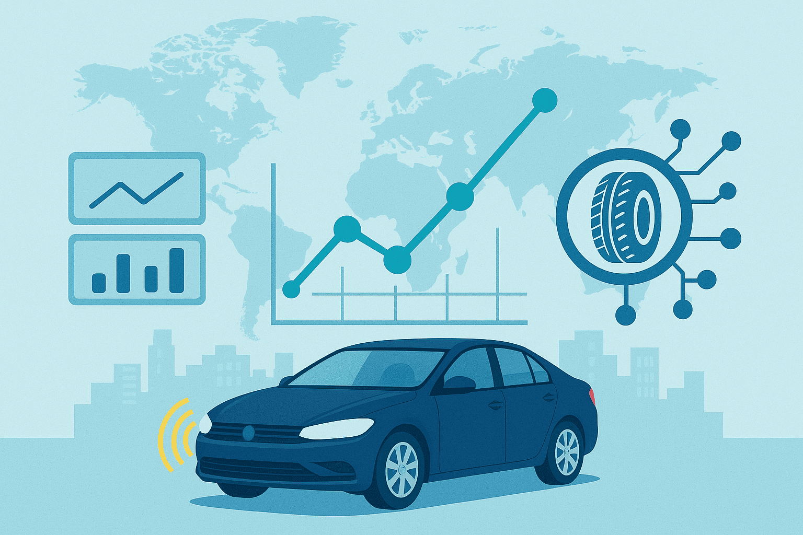

Mobilité Connectée

Informations sur le projet
- Catégorie: Machine Learning
- Entreprise: Michelin
- Date: 2019 - 2020
- Durée: 1 an
- Localisation: Ladoux (Pôle R&D)
- Stack: Python, Scikit-learn, Keras
Description du projet
Projet de recherche et développement dans le domaine de la mobilité connectée, visant à identifier les conditions de roulage d'un véhicule à partir des signaux émis par les pneumatiques. L'objectif est de contribuer au développement de véhicules connectés et d'améliorer leur sûreté.
Objectif
Développer des modèles de Machine Learning robustes pour l'analyse des signaux pneumatiques, permettant d'identifier les conditions de roulage et d'améliorer la sécurité des véhicules connectés.
Méthodologie
- Mise en place d'une démarche scientifique rigoureuse
- Développement d'un benchmark de modèles de Machine Learning
- Implémentation d'algorithmes d'apprentissage supervisé et non supervisé
- Création de modèles locaux adaptés à chaque caractéristique des variables
- Collaboration avec une équipe internationale (France et Inde)
Compétences développées
- Machine Learning : modèles prédictifs, benchmark
- Python : Scikit-learn, Keras
- Analyse de signaux et traitement du signal
- Travail en équipe internationale
Résultats
- Création d'un benchmark complet de modèles de Machine Learning
- Identification des variables influençant les signaux pneumatiques
- Développement de modèles locaux adaptés à chaque caractéristique
- Contribution à l'amélioration de la sécurité des véhicules connectés